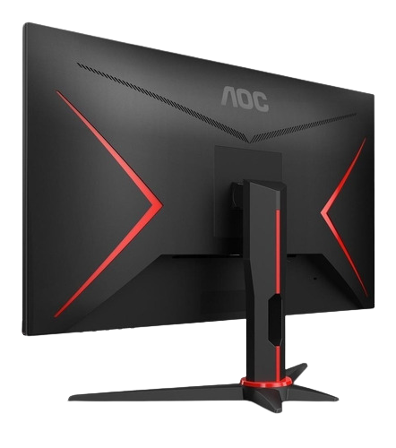
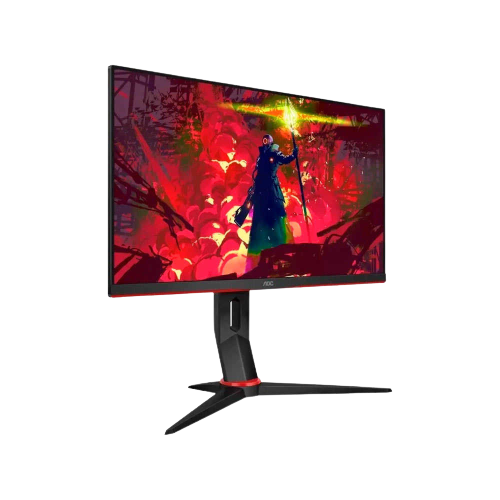
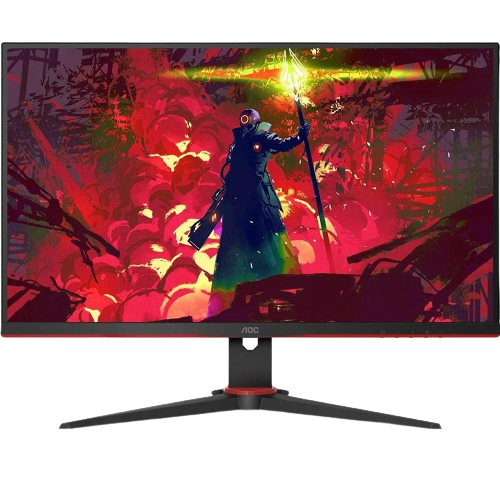

MONITOR GAMER AOC SPEED 23,8" LED 1MS 75HZ FHD FREESYNC VGA/HDMI, 24G2HE5



Descrição do Produto:
TECNOLOGIA SHADOW CONTROL ESTE DIFERENCIAL CONTROLA OS NÍVEIS DE CINZA NO MENU DO MONITOR PARA MELHORAR A RELAÇÃO DE CONTRASTE EM TELAS ESCURAS E PROPORCIONAR AS MELHORES CENAS, SEMPRE. APROVEITE AS VANTAGENS DE TER UM PAINEL IPS EM SEU MONITOR GAMER E ENXERGUE OS INIMIGOS MESMO EM CENAS COM POUCA ILUMINAÇÃO. ESSA AVANÇADA TECNOLOGIAS CORES SEM COMPROMETER A VELOCIDADE, ALÉM DE ENTREGAR UM ÓTIMO ÂNGULO DE VISÃO PARA VOCÊ CURTIR AINDA MAIS SEUS JOGOS.